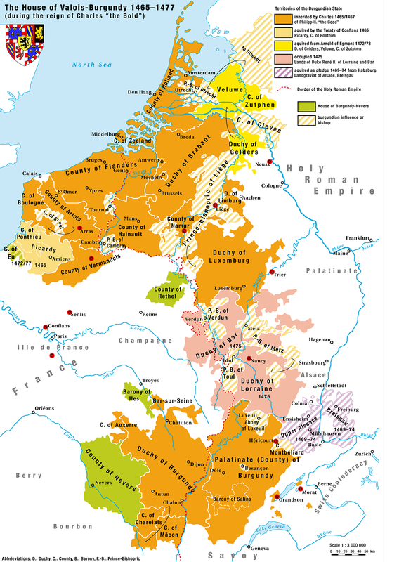
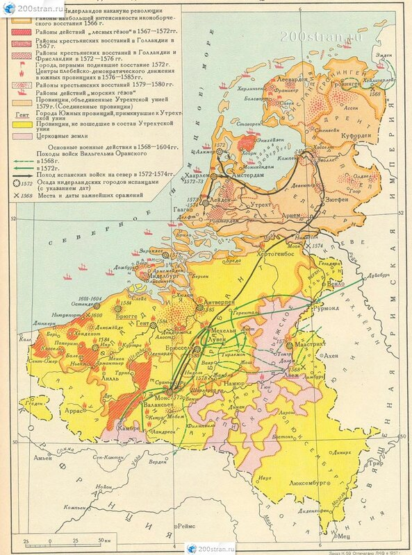
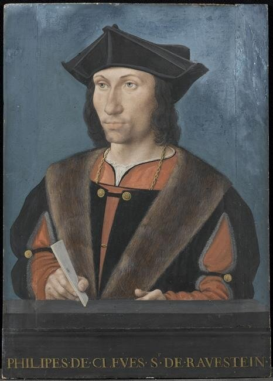
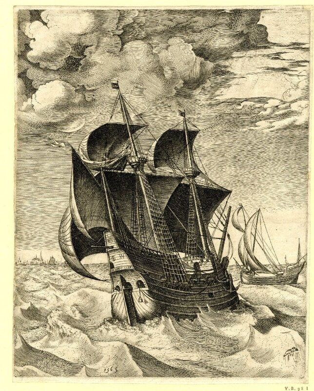

...Весной 1551 года отношения Франции с Нидерландами обострились до предела. Прежде, чем перейти к рассказу о боевых операциях французского флота в этой зоне, в которых принял участие Эскален, скажем несколько слов о Нидерландах того времени и их флоте.
Территория нынешних Нидерландов в первой половине XVI веке была частью герцогства Бургундского, которое территориально располагалось между Францией и Германией.

Карта Бургундии (конец XV века)
Нидерланды – несколько провинций, расположенных по нижнему течению Шельды, Мааса и Рейна – являлись северной частью герцогства.

Карта Нидерландов XVI века (взято на 200stran.ru)
Фактическим правителем Нидерландов стал наместник (генеральный штатгальтер) императора, представитель, как правило, семейства Габсбургов. В провинциях руководство принадлежало провинциальным штатгальтерам (статхаудерам, голл. Stadhouder), обычно выходцам из местной аристократии. (Пусть нас не беспокоит новый термин – штатгальтер, статхаудер. Это один из вариантов названия губернатора, или, как это часто было во Франции – лейтенанта, а точнее – представителя монарха в провинциальных областях, наместника).
Если посмотреть на карту Европы того времени, то сразу же можно заметить, что Франция практически окружена территорией Габсбургов: Нидерланды на севере, Испания на юге, Германская империя на востоке. Поэтому становится понятной основная движущая сила внешней политики Франциска I, а затем Генриха II – вырваться из этого окружения. Чтобы извлечь максимальную пользу из своего компактного географического положения, Франция систематически наносила удары по ахиллесовой пяте Габсбургов –протяженным коммуникациям между различными частями империи.
Для Карла V Нидерланды представляли огромную ценность. Они не только давали ему колоссальные финансовые средства (6692 тыс. ливров в одном лишь 1552 г.), но и были важнейшим военно-стратегическим плацдармом против Франции и противников Карла V из числа немецких князей.
Нидерланды также извлекали некоторые выгоды из своей принадлежности к империи Карла V. Будучи экономически наиболее развитой страной Европы, они захватили в свои руки почти всю торговлю с испанскими колониями и значительную часть финансовых операций империи, что способствовало дальнейшему экономическому развитию Нидерландов.
Что касается флота Нидерландов, то по своей мощи он не представлял еще угрозы более развитым в морском отношении государствам Европы: Франции, Англии и Испании. Однако его транспортные возможности издавна использовались враждующими сторонами в своих интересах. Например, во время Столетней войны английские войска транспортировались во Францию на голландских судах.
В 1488 году были созданы организационные основы для централизованного управления военно-морскими силами Нидерландов. Максимилиан Австрийский (будущий император Священной Римской империи Максимилиан I) как регент своего несовершеннолетнего сына Филиппа (Филипп Красивый, герцог Бургундии) опубликовал так называемый «Ордонанс об Адмиралтействе» (Ordonnantie op de Admiraliteit), который вводил Адмиралтейство в Веере (De Admiraliteit van Veere) и новое должностное лицо – Адмирал моря или Генерал-адмирал Нидерландов (Admiraal van de zee of admiraal-generaal van de Nederlanden).
Скажем несколько слов об истории адмиральского звания в Нидерландах.Ранее мы уже рассмотрели начальную историю возникновения термина и звания адмирал. В Нидерландах это звание впервые появилось во Фландрии в четырнадцатом веке. Первоначально это бы выборный командир отряда из нескольких торговых судов, которые объединялись во временное соединение для взаимной защиты на период перехода между портами отправления и прибытия. Временного адмирала на период морских экспедиций или кампаний выбирали и в военном флоте. Позже временный адмирал морских соединений уже не избирался капитанами, а назначался местными правителями. Этот период «временных адмиралов» во Фландрии продолжался примерно до начала XV века, после чего звание постепенно стало постоянным и функции адмирала приобретали типичные бюрократические черты. Впервые пожизненно адмиральское звание было присвоено основателем Бургундского герцогства Филиппом II Смелым (1384-1404) Яну Бюку (Jan Buuc). Адмиралы имели титул Admiraal van de Zee и Admiral de Flandre. Кстати, бюрократизация должности адмирала привела постепенно к тому, что главный флотский начальник осел на суше, и для командования соединениями военного флота в море вновь пришлось вернуться к практике назначения временных адмиралов.
Последним адмиралом Фландрии стал Joost van Lalaing, который умер в 1483 году. Рожденная во Фландрии традиция была закреплена в создании в 1485 году объединенного морского командования всех провинций Нидерландов и назначения на должность Адмирала Нидерландов Филиппа Клевского.

Портрет Филиппа Клевского. Неизвестный автор. Германия. (1490-1505) Musée Condé , Chantilly, France
С 1491 по 1558 год должность Адмирала Нидерландов сохраняли члены Бургундского дома. Они имели резиденцию в провинции Зеландия и известны в истории как Лорды Веере (De heren van Veere). Только после кончины последнего бургундского правителя Зеландии Максимилиана Бургундского, получившего в 1555 году титул Маркиза Веере, и перехода должности Адмирала к Филиппу Монморанси, было принято решение (1560 год) перевести Адмиралтейство из Веере в Гент. Корабли военного флота Габсбургов, который базировался в Веере, были проданы в 1561 году.
После затянувшегося «нидерландского» отступления вернемся к весне 1551 года и к барону де Лагарду.
…Адмирал Максимилиан Бургундский в полной секретности готовил десантную операцию против Франции. В порт Веере войска прибывали скрытно, погрузка на корабли осуществлялась поочередно. Нидерландская наместница Мария Австрийская отдала специальный приказ, запрещающий во время подготовки операции подавать воинские сигналы сбора бубном. Когда ее спросили о причине такого указания, губернаторша объяснила, что это лишь ответ на аналогичный приказ французского адмирала д'Аннебо в Нормандии. А д'Аннебо тем временем отправил к королю Франции своего посланника с подробным планом действия флота против Нидерландов. Этим посланником был конечно же барон де Лагард. Операцию адмирал предлагал возглавить лично, в качестве боевого ядра было соединение, включающее пятнадцать кораблей. Д'Аннебо считал, что целью морской операции Нидерландов будет либо Гавр, либо французская эскадра под командованием маршала де Сен-Андрэ, который направился в Англию для согласования деталей Булонского договора. В качестве превентивной меры гарнизон Гавра был увеличен на двести человек.
Чтобы предотвратить возможность информирования нидерландского командования о передвижениях французского флота, французы захватили три голландских судна, болтающихся в Ла-Манше, и направили их в Дьеп. В ответ корабли Нидерландов захватили все французские торговые суда, находившиеся в их портах.
Ответ Франции на эту акцию не заставил себя ждать. Барон де Лагард с отрядом из одиннадцати галер вышел из Гавра и 20 августа 1551 года в одном лье от Фалмута на крайнем юго-западе Англии повстречал конвой из двадцати двух фламандских хольков.

Хольк. Питер Брюгель-старший (взято у  marinni )
marinni )
Что произошло дальше, узнаем в следующий раз.